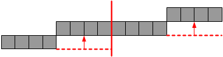
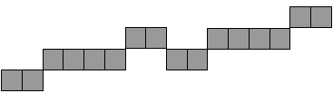
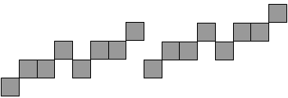

Vous disposez d'une bande de papier de 16 cm de long et 1 cm de haut. Cette bande est divisée en 16 petits carrés de 1 cm de côté.
Vous posez la bande sur une table. Vous coupez alors la bande en deux morceaux égaux, puis vous glissez le morceau de droite de 1 cm vers le haut.
Ensuite, vous répétez la même procédure pour chacun des deux morceaux obtenus : vous les coupez en deux au milieu, puis vous faites glisser le morceau de droite de 1 cm vers le haut.
Vous appliquez de nouveau la procédure pour les 4 nouveaux morceaux obtenus, puis vous répétez encore une fois la procédure avec les 8 morceaux obtenus. À quoi ressemble alors le résultat ?
On applique la procédure sur les 4 morceaux :

puis sur les 8 morceaux :

La bonne réponse est donc 4.
L'algorithme est décrit de manière récursive : pour obtenir le résultat final, on part d'une configuration, on effectue une transformation qui produit deux morceaux, puis on applique à nouveau le même algorithme sur chacun des morceaux produits, et ainsi de suite, jusqu'à obtenir des morceaux de taille 1.
Beaucoup de problèmes informatiques peuvent être résolus par des algorithmes récursifs.